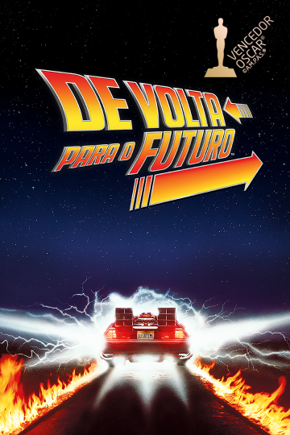

<ion-header [translucent]="true">
  <ion-toolbar>
    <ion-title>
      Network
    </ion-title>
  </ion-toolbar>
</ion-header>

<ion-content [fullscreen]="true">

  <ion-card>
      <ion-item>
        <ion-avatar>
          
        </ion-avatar>
        <h2>{{ objeto_feed.nome }}</h2>
        <p>{{ objeto_feed.data }}</p>
      </ion-item>

    <div class="image">
      
    </div>

    <ion-card-content>
      <p>{{ objeto_feed.descricao }}</p>
    </ion-card-content>

    <ion-row>
      <ion-col size="4">
        <button ion-button icon-left clear small >
          <ion-icon name="thumbs-up"></ion-icon>
          <div>{{ objeto_feed.qntd_likes }} Likes</div>
        </button>
      </ion-col>
      <ion-col size="4">
        <button ion-button icon-left clear small >
          <ion-icon name="text"></ion-icon>
          <div>{{ objeto_feed.qntd_comments }} Comments</div>
        </button>
      </ion-col>
      <ion-col size="4" center text-center>
        <ion-note>
          {{ objeto_feed.tempo_comment }}
        </ion-note>
      </ion-col>
    </ion-row>
  </ion-card>
</ion-content>
